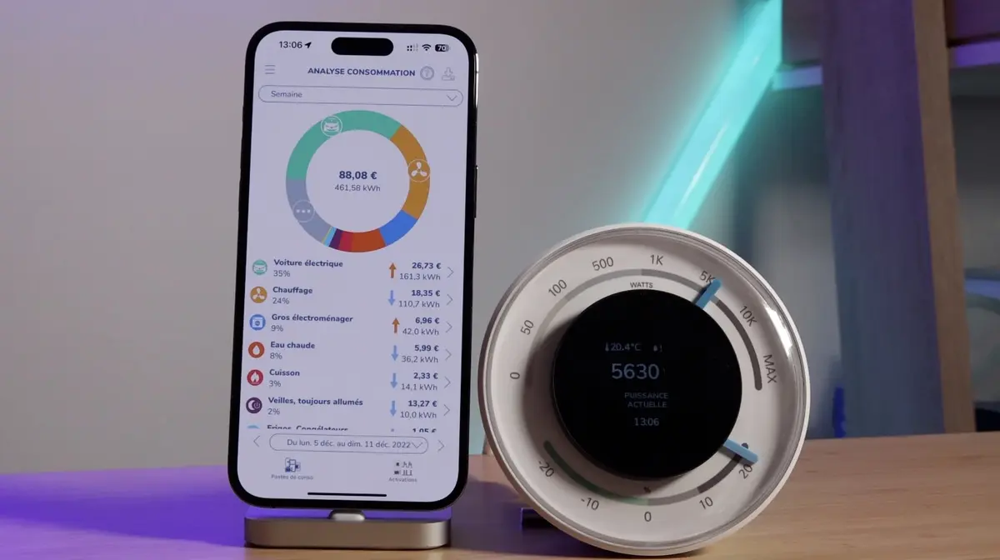

En france, l'eau chaude sanitaire que nous utilisons dans nos logements principalement pour se laver et faire la vaisselle à la main a commencé à se démocratiser après-guerre et est aujourd’hui une évidence. Il existe une multitude de moyens différents de chauffer l’eau. Le système peut être couplé au chauffage central du logement comme une chaudière (fioul, gaz, bois, pellets, etc) ou être un système indépendant. La production peut être instantanée ou par accumulation dans un ballon d’eau chaude. Pour ce dernier cas il existe plusieurs technologies mais dans la majorité des cas c’est une simple résistance électrique qui chauffe et maintient chaude l'eau contenue dans le ballon.
Historiquement c’est cette solution qui est la plus courante en France. En 2016 on comptait environ 17 millions d’unités installées et 1.5 millions d’unités vendues dans le pays. Ces systèmes sont apparus dans un monde où l'énergie était abondante et bon marché et où l'état d'esprit n'était pas orienté vers la sobriété. Aujourd'hui le contexte est différent. Le prix de l'énergie augmente et les enjeux climatiques sont devenus une préoccupation majeure. Pourtant l'emprunte des chauffe-eaux électriques est rarement un sujet de discussion en comparaison du chauffage des habitations ou du transport. C'est pourtant un poste de consommation important dans un logement. On peut bien sûr d'abord questionner ses besoins en eau chaude et tenter de les réduire le plus possible. Mais il reste un élément majeur dans le fonctionnement de ces appareils qui est trop souvent sous-estimé : les pertes statiques.
La perte statique désigne l'énergie thermique perdue par dissipation par le chauffe-eau lorsqu'il est en mode veille, c'est-à-dire lorsque l'eau est chauffée mais non utilisée. La consommation électrique totale d'un chauffe-eau est très variable d'un cas à l'autre mais en moyenne on estime qu'un chauffe-eau consomme autour de 1500 kwh par an ce qui représente environ 40% de la facture d'électricité d'un logement (qui ne se chauffe pas à l'électricité). La part des pertes statiques dans cette consommation est estimée à 32% soit environ 500 kwh par an en moyenne. Même depuis l'installation du nouveau compteur connecté Linky, il est généralement impossible de mesurer la consommation de chaque appareil électrique individuellement et notamment du chauffe-eau et encore moins uniquement de l'énergie dépensée uniquement pour compenser les pertes statiques. Dans un monde idéal, tous les utilisateurs pourraient analyser leur consommation détaillée par appareil sur leur facture d'électricité comme on peut déjà le faire grâce à des écocompteurs directement sur le tableau électrique ou des capteurs connectés.

Les pertes statiques sont bien sûr inévitables dans ce type de système. Mais il existe pourtant des paramètres pour les limiter et ceux-ci sont malheureusement trop peu souvent évoqués. Voici donc quelques constats et reflexions sur les différents paramètres que vous pouvez modifier pour l'optimisation de votre chauffe-eau électrique :
Les fabricants n’isolent pas assez les chauffe-eau. Il existe bien un systeme de notation de la performance des appareils qui aide à a comparaison lors de l'achat. Mais le système est assez rudimentaire et n'incite pas les fabricants à augmenter suffisamment l'épaisseur des isolants. Pour faire des economies, ils font le minimum pour atteindre la classe énergétique visée. Tous les chauffe-eaux du marché sont aujourd’hui isolés par 32 à 38mm de polyuréthane sans isolation complète de la trappe de visite au niveau du thermostat. Pour une installation standart, une isolation renforcée (70mm au lieu de 35mm) permettrait un gain moyen autour de 200kWh par an. Il est possible de rajouter de l'isolant sur un chauffe-eau existant pour améliorer ses performances. Attention, il y a plusieurs precautions à prendre pour la sécurité de l'installation et pour que celle-ci soit le plus efficace possible.
La température de l’air ambiant autour du chauffe eau est souvent oubliée mais joue un rôle majeur dans les pertes statiques. Trop souvent le ballon est placé dans un endroit froid comme un garage, une cave, un grenier ou un cellier. Quand c'est possible, il faut le placer dans la zone chauffée du logement pour réduire le différentiel de température. Gardons à l'esprit que l'été, le chauffe-eau pourra produire de la chaleur indésirable dans ce local.
La gestion de la température de stockage est un point clé car elle influe directement et de manière importante sur la consommation électrique. Malheuresement celle-ci est généralement très mal maitrisée. En voici quelques raisons.
D'abord parceque l’immense majorité des chauffe-eaux n’indique pas cette température. On ne peut généralement pas consulter la température réelle d’un chauffe-eau. Les fabricants n'offrent qu'un moyen de réglage imprécis et situé à un emplacement peu accessible. Dans le parc français, 75% des thermostats sont du fabricant COTHERM (les principaux concurrents sont Thermowatt et tec kit). Le fabricant positionne le réglage des thermostats au maximum en sortie d’usine. De part leur emplacement les thermostats sont en effet difficilement accessibles, les graduations sont peu lisibles et les correspondances avec des températures réelles sont assez théoriques au regard des constatations faites sur le terrain. Il faudrait ajouter systématiquement un affichage de la température de consigne en façade, avec la possibilité de la modifier facilement avec des boutons ergonomiques +/- et dans une large plage de températures.
Ensuite parce qu'il y a un manque cruel d'information quant aux recommendations sur la température de consigne. Les recommandations sont difficiles à se procurer et relativement variables d'un document à l'autre. Surtout aucun détails ni aucune source scientifique n'est généralement disponible. Il existe effectivement un risque sanitaire lié au development de bactéries dans l'eau chaude et stagnante du ballon, mais celui ci est mal documenté à ma connaissance. Dans ce but on recommande habituellement de maintenir la température de consigne très élevée : généralement autour de 60°C. Le plus souvent c'est un professionnel qui effectue ce réglage lors de l'installation. Pour avoir la conscience tranquille et éviter les problèmes, il a tendance à plutôt surdimensionner la température de consigne. Conserver en permanence une eau aussi chaude rajoute un surcout important pour l'utilisateur. Une décision prise rapidement et discrètement mais avec de grandes conséquences au long terme car elle est invisible et ne sera probablement plus jamais modifiée jusqu'à la fin de vie de l'appareil.
Il existe pourtant une façon de résoudre ce problème assez facilement si le chauffe-eaux permettait de programmer régulièrement des cycles de montée en température temporaire (aussi chaud que nécessaire, à 60-70 °C par exemple) de quelques minutes seulement pour tuer les bactéries. On pourrait ajuster la fréquence de ces montées en température "flash". Cela permettrait de régler la temperature de consigne le reste du temps le plus bas possible par rapport aux besoins réels de consommation. En gardant bien sûr à l'esprit que moins l'eau est chaude, moins il y a de quantité d'eau chaude utile au final.